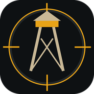

Отдельного приложения в магазинах нет и не нужно: игра ставится прямо из браузера. После установки она открывается со своего значка, во весь экран, без адресной строки — и запускается быстрее, потому что код уже лежит на телефоне.
Пункта меню нет вообще? Значит, страница открыта не по https.
По адресу zastava.web.app всё на месте.
Кнопки «Установить» на этой странице у тебя не будет: Safari не даёт сайту её показать. Это нормально, шаги выше работают.